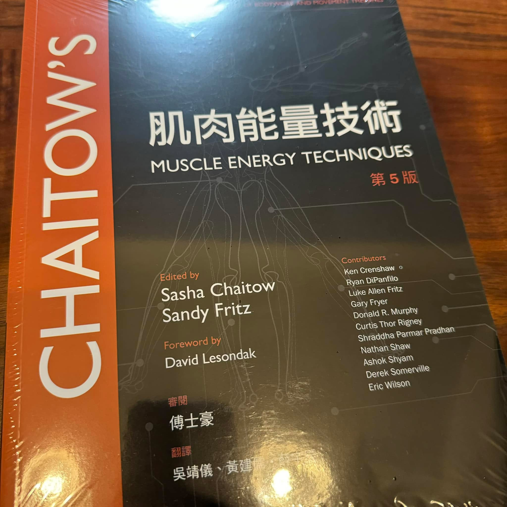

從學生時代開始學中醫骨傷科/徒手治療，持續精進後了解到原來我的啟蒙手法源自於ME…
從學生時代開始學中醫骨傷科/徒手治療，持續精進後了解到原來我的啟蒙手法源自於MET，理論與技術總算腦洞大開，開始能掌握原則而不受限於手法形式的框架，也才能有今天的我，今天總算拿到書了，熱騰騰剛出版，趕緊來拜讀🤩🤩🤩
#muscleenergytechniques
#正宗祖師MET

中醫徒手・內針傷整合・精準全人醫療
從學生時代開始學中醫骨傷科/徒手治療，持續精進後了解到原來我的啟蒙手法源自於MET，理論與技術總算腦洞大開，開始能掌握原則而不受限於手法形式的框架，也才能有今天的我，今天總算拿到書了，熱騰騰剛出版，趕緊來拜讀🤩🤩🤩
#muscleenergytechniques
#正宗祖師MET

有類似的困擾想諮詢？